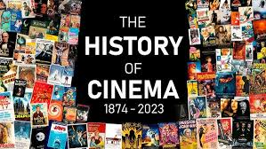

History of world cinemaThe advent of
film as an artistic medium is not clearly defined. There were earlier cinematographic screenings by others
like the first showing of life sized pictures in motion 1894 in Berlin by Ottomar Anschütz; however, the commercial,
public screening of ten Lumière brothers' short films in Paris on 28 December 1895, can be regarded as the breakthrough
of projected cinematographic motion pictures. The earliest films were in black and white, under a minute long, without
recorded sound, and consisted of a single shot from a steady camera. The first decade saw film move from a novelty, to
an established mass entertainment industry, with film production companies and studios established throughout the world.
Conventions toward a general cinematic language developed, with film editing, camera movements and other cinematic
techniques contributing specific roles in the narrative of films.